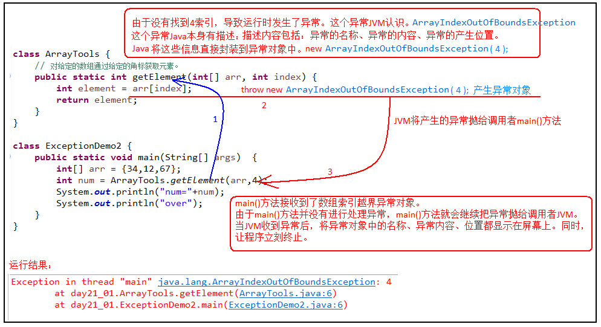

第8章 异常
主要内容
- 异常的体系结构
- 常见异常
- throw关键字（手动创建并抛出异常）
- 异常处理机制一：try（掌握）
- 异常处理机制二：throws（掌握）
- 自定义异常
学习目标
-
能够辨别程序中异常和错误的区别
-
说出异常的分类
-
说出虚拟机处理异常的方式
-
可以编写代码演示OOM
-
列出常见的5个运行时异常
-
列出常见的5个编译时异常
-
能够使用try...catch关键字处理异常
-
能够使用throws关键字处理异常
-
能够自定义异常类
-
能够处理自定义异常类
第八章 异常
8.1 异常概述
在使用计算机语言进行项目开发的过程中，即使程序员把代码写得 尽善尽美，在系统的运行过程中仍然会遇到一些问题，因为很多问题不是靠代码能够避免的，比如：客户输入数据的格式，读取文件是否存在，网络是否始终保持通畅等等。
- 异常 ：指的是程序在执行过程中，出现的非正常的情况，如果不处理最终会导致JVM的非正常停止。
异常指的并不是语法错误。语法错了，编译不通过，不会产生字节码文件，根本不能运行。
异常也不是指逻辑代码错误而没有得到想要的结果，例如：求a与b的和，你写成了a-b
对于异常的发生，要么直接终止程序的运行，这不是我们想要的结果；要么在编写程序时，预判到可能会出现异常的地方，做好针对性处理措施，当异常发生时，经异常处理后，可以保证程序还可以继续执行。
Java中如何描述异常并且都有什么样的异常？异常发生时，程序员如何得知？然后又该如何处理异常？
Java中把常见的不同异常用不同的类表示，当发生某种异常时，JVM会创建该异常类型的对象（其中包含了异常详细信息），并且抛出来，然后程序员可以catch到这个异常对象，并根据需要进行相应处理，如果无法catch到这个异常对象，说明没有针对这个异常预备处理措施，那么这个异常对象将会导致程序终止。
8.2 异常体系
异常的根类是java.lang.Throwable，Java提供的所有异常类均继承自此类，其下有两个子类：java.lang.Error与java.lang.Exception，平常所说的异常指java.lang.Exception。

Throwable体系：
Error:严重错误Error，无法通过处理的错误，只能事先避免，好比绝症。
- 例如：
StackOverflowError、OutOfMemoryError。
- 例如：
Exception:表示异常，其它因编程错误或偶然的外在因素导致的一般性问题，程序员可以通过相应预防处理措施，使程序发生异常后还可以继续运行。好比感冒、阑尾炎。
- 例如：空指针访问、试图读取不存在的文件、网络连接中断、数组角标越界
Throwable中的常用方法：
public void printStackTrace():打印异常的详细信息。包含了异常的类型,异常的原因,还包括异常出现的位置,在开发和调试阶段,都得使用printStackTrace。
public String getMessage():获取发生异常的原因。提示给用户的时候,就提示错误原因。
出现异常,不要紧张,把异常的简单类名,拷贝到API中去查。

8.3 异常分类
由于Error情况发生是我们无法处理的，一般因为是内存不足或程序存在严重逻辑问题，只能通过扩大内存或重新修改代码解决。
而我们平常所遇到的大多数是Exception类型的异常，也是我们通常说的异常和异常处理。Exception异常又通常分两大类：
运行期异常（unchecked Exception）：这类异常的发生多数是因为程序员编写的代码逻辑不够严谨造成的（如数组脚标越界异常），可以选择进行处理或不处理，最好是通过修正、优化代码避免异常的发生（或者使用异常处理简化复杂的逻辑判断代码）。
编译期异常（checked Exception）：这类异常一般由程序之外的因素引起的（如程序读取的文件不存在、网络中断），而不是程序员写的代码逻辑有问题，所以程序员容易忽略对这类异常的处理，而恰恰这类异常又很常发生，所以Java要求针对这类可能发生的异常必须进行处理，否则编译无法通过。（只有java语言有需强制处理的异常）

常见的错误和异常演示示例
VirtualMachineError
最常见的就是：
StackOverflowError:虚拟机栈内存不足，无法分配栈帧所需空间。OutOfMemoryError：没有足够的内存空间可以分配。public void test01(){//StackOverflowErrordigui();}public void digui(){digui();}xxxxxxxxxxpublic void test02(){//OutOfMemoryError//方式一：int[] arr = new int[Integer.MAX_VALUE];}public void test03(){//OutOfMemoryError//方式二：StringBuilder s = new StringBuilder();while(true){s.append("atguigu");}}运行时异常
xxxxxxxxxxpublic void test01(){//NullPointerExceptionint[] arr=null;System.out.println(arr.length);}public void test02(){//ClassCastExceptionPerson p = new Man();Woman w = (Woman) p;}public void test03(){//ArrayIndexOutOfBoundsExceptionint[] arr = new int[5];for (int i = 1; i <= 5; i++) {System.out.println(arr[i]);}}public void test04(){//InputMismatchExceptionScanner input = new Scanner(System.in);System.out.print("请输入一个整数：");int num = input.nextInt();}public void test05(){int a = 1;int b = 0;//ArithmeticExceptionSystem.out.println(a/b);}编译时异常
xxxxxxxxxxpublic void test06() throws InterruptedException{Thread.sleep(1000);//休眠1秒}public void test07() throws FileNotFoundException{FileInputStream fis = new FileInputStream("Java学习秘籍.txt");}public void test08() throws SQLException{Connection conn = DriverManager.getConnection("....");}
8.4 异常的生成与抛出机制throw
Java程序的执行过程中如出现异常，会生成一个异常类对象，然后该异常对象会被提交给Java运行时系统，这个过程称为抛出(throw)异常。异常对象的生成与抛出有两种方式：
由虚拟机自动生成：程序运行过程中，虚拟机检测到程序发生了问题，就会在后台自动创建一个对应异常类的实例对象并自动抛出。
我们通过示例分析下一次产生的过程：
运行以下程序会产生一个数组索引越界异常
ArrayIndexOfBoundsException。xxxxxxxxxx// 工具类public class ArrayTools {// 对给定的数组通过给定的角标获取元素。public static int getElement(int[] arr, int index) {int element = arr[index];return element;}}xxxxxxxxxx// 测试类public class ExceptionDemo {public static void main(String[] args) {int[] arr = { 34, 12, 67 };intnum = ArrayTools.getElement(arr, 4)System.out.println("num=" + num);System.out.println("over");}}上述程序执行过程图解：


由此看出，异常对象被JVM创建后，在产生异常的方法中会自动抛出，抛给方法的调用者，抛给main方法，最后抛给虚拟机，虚拟机打印异常信息后终止程序。
由开发人员手动创建：Exception exception = new ClassCastException();——创建好的异常对象不抛出对程序没有任何影响，和创建一个普通对象一样，手动创建的异常对象需要手动抛出，才会对程序产生影响。
在Java中，使用关throw关键字手动抛出一个异常对象,throw用在方法内，将这个异常对象传递到方法调用者处，同时结束当前方法的执行。
使用格式：
xxxxxxxxxxthrow new 异常类名(参数);例如：
xthrow new NullPointerException("要访问的arr数组不存在");throw new ArrayIndexOutOfBoundsException("该索引在数组中不存在，已超出范围");throw的使用示例：
public class ThrowDemo { public static void main(String[] args) { //创建一个数组 int[] arr = {2,4,52,2}; //根据索引找对应的元素 int index = 4; int element = getElement(arr, index); System.out.println(element); System.out.println("over"); } /* * 根据 索引找到数组中对应的元素 */ public static int getElement(int[] arr,int index){ if(arr == null){ /* 判断条件如果满足，当执行完throw抛出异常对象后，方法已经无法继续运算。 这时就会结束当前方法的执行，并将异常告知给调用者。这时就需要通过异常来解决。 */ throw new NullPointerException("要访问的arr数组不存在"); } //判断 索引是否越界 if(index<0 || index>arr.length-1){ /* 判断条件如果满足，当执行完throw抛出异常对象后，方法已经无法继续运算。 这时就会结束当前方法的执行，并将异常告知给调用者。这时就需要通过异常来解决。 */ throw new ArrayIndexOutOfBoundsException("哥们，角标越界了~~~"); } int element = arr[index]; return element; } }注意：如果产生了问题，我们就会throw将问题描述类即异常进行抛出，也就是将问题返回给该方法的调用者。
那么对于调用者来说，该怎么处理呢？一种是进行捕获处理，另一种就是继续讲问题声明出去，使用throws声明处理。
练习1
1、声明Husband类，包含姓名和妻子属性，属性私有化，提供一个Husband(String name)的构造器，重写toString方法，返回丈夫姓名和妻子的姓名
2、声明Wife类，包含姓名和丈夫属性，属性私有化，提供一个Wife(String name)的构造器，重写toString方法，返回妻子的姓名和丈夫的姓名
3、声明TestMarry类，在main中，创建Husband和Wife对象后直接打印妻子和丈夫对象，查看异常情况，看如何解决
练习2
1、声明银行账户类Account
（1）包含账号、余额属性，要求属性私有化，提供无参和有参构造，
（2）包含取款方法，当取款金额为负数时，抛出IllegalArgumentException，异常信息为“取款金额有误，不能为负数”，当取款金额超过余额时，抛出UnsupportedOperationException，异常信息为“取款金额不足，不支持当前取款操作”
（3）包含存款方法，当取款金额为负数时，抛出IllegalArgumentException，异常信息为“存款金额有误，不能为负数”
2、编写测试类，创建账号对象，并调用取款和存款方法，并传入非法参数，测试发生对应的异常。
8.5 异常的处理机制
如果一个方法内抛出异常，该异常对象会被抛给调用者方法中处理。如果异常没有在调用者方法中处理，它继续被抛给这个调用方法的上层方法。这个过程将一直继续下去，直到异常被处理。这一过程称为捕获(catch)异常。
8.5.1 捕获异常try…catch
捕获异常：Java中对异常有针对性的语句进行捕获，可以对出现的异常进行指定方式的处理。
捕获异常语法如下：
try{ 编写可能会出现异常的代码 }catch(异常类型1 e){ 处理异常的代码 //记录日志/打印异常信息/继续抛出异常 }catch(异常类型2 e){ 处理异常的代码 //记录日志/打印异常信息/继续抛出异常 } ....try：捕获异常的第一步是用try{…}语句块选定捕获异常的范围，将可能出现异常的代码放在try语句块中。建议：此范围尽量小。
catch：用来进行某种异常的捕获，实现对捕获到的异常进行处理。每个try语句块可以伴随一个或多个catch语句，用于处理可能产生的不同类型的异常。
- 可以有多个catch块，按顺序匹配。
- 如果多个异常类型有包含关系，那么小上大下
演示示例：
public class TestException { public static void main(String[] args) { try { readFile("不敲代码学会Java秘籍.txt"); } catch (FileNotFoundException e) { // e.printStackTrace(); // System.out.println("好好敲代码，不要老是想获得什么秘籍"); System.out.println(e.getMessage()); } catch (IllegalAccessException e) { e.printStackTrace(); } System.out.println("继续学习吧..."); } // 如果定义功能时有问题发生需要报告给调用者。可以通过在方法上使用throws关键字进行声明 public static void readFile(String filePath) throws FileNotFoundException, IllegalAccessException{ File file = new File(filePath); if(!file.exists()){ throw new FileNotFoundException(filePath+"文件不存在"); } if(!file.isFile()){ throw new IllegalAccessException(filePath + "不是文件，无法直接读取"); } //... } }
获取异常信息：
捕获到了异常对象，就可以获取异常对象中封装的异常信息，Throwable类中定义了一些方法用于获取异常对象中的信息:
public String getMessage():获取异常的描述信息。public void printStackTrace():打印异常的跟踪栈信息并输出到控制台。这些信息包含了异常的类型,异常信息,还包括异常出现的位置,在开发和调试阶段,建议使用printStackTrace。
8.5.2 finally块
finally：在finally代码块中存放的代码都是一定会被执行的。由于异常会引发程序跳转，导致后面有些语句执行不到，如果一定要执行这些语句就可以使用finally，finally常用于释放系统资源。
比如：当我们在try语句块中打开了一些物理资源(磁盘文件/网络连接/数据库连接等),无论异常有没有发生，我们都要在使用完之后关闭已打开的资源，避免系统资源的浪费。
finally的语法:
try{
}catch(...){
}finally{
无论try中是否发生异常，也无论catch是否捕获异常，也不管try和catch中是否有return语句，都一定会执行
}
或
try{
}finally{
无论try中是否发生异常，也不管try中是否有return语句，都一定会执行。
}
注意:finally不能单独使用。
当只有在try或者catch中调用退出JVM的相关方法，例如System.exit(0),此时finally才不会执行,否则finally永远会执行。
finally代码IO流读取文件示例如下：（暂）
import java.io.File;
import java.io.FileInputStream;
import java.io.FileNotFoundException;
import java.io.IOException;
public class TestException {
public static void main(String[] args) {
readFile("不敲代码学会Java秘籍.txt");
System.out.println("继续学习吧...");
}
// 如果定义功能时有问题发生需要报告给调用者。可以通过在方法上使用throws关键字进行声明
public static void readFile(String filePath) {
File file = new File(filePath);
FileInputStream fis = null;
try {
if(!file.exists()){
throw new FileNotFoundException(filePath+"文件不存在");
}
if(!file.isFile()){
throw new IllegalAccessException(filePath + "不是文件，无法直接读取");
}
fis = new FileInputStream(file);
//...
} catch (Exception e) {
//抓取到的是编译期异常 抛出去的是运行期
throw new RuntimeException(e);
}finally{
System.out.println("无论如何，这里的代码一定会被执行");
try {
if(fis!=null){
fis.close();
}
} catch (IOException e) {
//抓取到的是编译期异常 抛出去的是运行期
throw new RuntimeException(e);
}
}
}
}

8.5.3 finally与return （了解）
形式一：从try回来
public class TestReturn { public static void main(String[] args) { int result = test("12"); System.out.println(result); } public static int test(String str){ try{ Integer.parseInt(str); return 1; }catch(NumberFormatException e){ return -1; }finally{ System.out.println("test结束"); } } }形式二：从catch回来
public class TestReturn { public static void main(String[] args) { int result = test("a"); System.out.println(result); } public static int test(String str){ try{ Integer.parseInt(str); return 1; }catch(NumberFormatException e){ return -1; }finally{ System.out.println("test结束"); } } }形式三：从finally回来
public class TestReturn { public static void main(String[] args) { int result = test("a"); System.out.println(result); } public static int test(String str){ try{ Integer.parseInt(str); return 1; }catch(NumberFormatException e){ return -1; }finally{ System.out.println("test结束"); return 0; } } }面试题
public static void main(String[] args) { int test = test(3,5); System.out.println(test);//8 } public static int test(int x, int y){ int result = x; try{ if(x<0 || y<0){ return 0; } result = x + y; return result; }finally{ result = x - y; } }public class Test04 { static int i = 0; public static void main(String[] args) { System.out.println(test());//2 } public static int test(){ try{ return ++i; }finally{ return ++i; } } }
8.5.4 声明异常throws
throws：用在方法上，表明此方法可能会产生的异常类型。
如果在某方法内通过抛出了必须要处理的编译期异常，有两种选择：要么在当前方法进行捕获处理，要么通过throws在当前方法上进行声明，让方法的调用者去处理。
声明异常格式：
修饰符 返回值类型 方法名(参数) throws 异常类名1,异常类名2…{ }
声明异常的代码演示：
import java.io.File;
import java.io.FileNotFoundException;
public class TestException {
public static void main(String[] args) throws FileNotFoundException {
readFile("不敲代码学会Java秘籍.txt");
}
// 如果定义功能时有问题发生需要报告给调用者。可以通过在方法上使用throws关键字进行声明
public static void readFile(String filePath) throws FileNotFoundException{
File file = new File(filePath);
if(!file.exists()){
throw new FileNotFoundException(filePath+"文件不存在");
}
}
}
throws用于进行异常类的声明，若该方法可能有多种异常情况产生，那么在throws后面可以写多个异常类，用逗号隔开。
import java.io.File;
import java.io.FileNotFoundException;
public class TestException {
public static void main(String[] args) throws FileNotFoundException,IllegalAccessException {
readFile("不敲代码学会Java秘籍.txt");
}
// 如果定义功能时有问题发生需要报告给调用者。可以通过在方法上使用throws关键字进行声明
public static void readFile(String filePath) throws FileNotFoundException,IllegalAccessException{
File file = new File(filePath);
if(!file.exists()){
throw new FileNotFoundException(filePath+"文件不存在");
}
if(!file.isFile()){
throw new IllegalAccessException(filePath + "不是文件，无法直接读取");
}
//...
}
}
练习
1、声明银行账户类Account
（1）包含账号、余额属性，要求属性私有化，提供无参和有参构造，
（2）包含取款方法，当取款金额为负数时，抛出Exception，异常信息为“越取你余额越多，想得美”，当取款金额超过余额时，抛出Exception，异常信息为“取款金额不足，不支持当前取款操作”
（3）包含存款方法，当取款金额为负数时，抛出Exception，异常信息为“越存余额越少，你愿意吗？”
2、编写测试类，创建账号对象，并调用取款和存款方法，并传入非法参数，测试发生对应的异常。
8.6 自定义异常
为什么需要自定义异常类:
异常表示程序运行中出现的不正常的情况，我们说了Java中不同的异常类,分别表示着某一种具体的异常情况，我们在使用也是尽量使用Java这些异常类型。但在大型系统的开发中总是有些不正常的情况是Java没有定义好的类不好表示的，此时我们可以根据自己业务的异常情况来自定义异常类。例如年龄负数问题，考试成绩负数问题等等，我们都可以通过自定义异常类来表示。
异常类如何定义:
保持一个合理的异常体系是很重要的，一般自定义一个异常UserException作为“根异常”，然后在此基础上再派生出不同的异常类型，自定义的“根异常”需要从一个合适的现有异常中派生出来，通常建议派生自
java.lang.RuntimeException。"根异常"：
public class UserException extends RuntimeException { }其他异常从”根异常“派生出来：
public class UserExistedException extends UserException { } public class UserNotFoundException extends UserException { } ...自定义的“根异常”通常提供多个构造方法，直接调用父类的即可：
//用户异常类 public class UserException extends RuntimeException { public UserException() { } public UserException(String message) { super(message); } public UserException(String message, Throwable cause) { super(message, cause); } public UserException(Throwable cause) { super(cause); } }派生出的异常，提供简单两个构造方法，够用即可：
//用户已经存在异常类 public class UserExistedException extends UserException { public UserExistedException() { } public UserExistedException(String message) { super(message); } }演示自定义异常：
要求：结合上面自定义的异常类，模拟注册操作，如果用户名已存在，则抛出异常并提示：亲，该用户名已经被注册。
模拟登陆操作，使用数组模拟数据库中存储的数据，并提供当前注册账号是否存在方法用于判断。
public class DemoUserException { // 模拟数据库中已存在账号 private static String[] names = {"bill","hill","jill"}; public static void main(String[] args) { //调用方法 try{ // 可能出现异常的代码 checkUsername("bill"); System.out.println("注册成功");//如果没有异常就是注册成功 }catch(UserExistedException e){ //处理异常 e.printStackTrace(); } } //判断当前注册账号是否存在 //因为是编译期异常，又想调用者去处理 所以声明该异常 public static boolean checkUsername(String uname) { for (int i=0; i<names.length; i++) { if(names[i].equals(uname)){//如果名字在这里面 就抛出登陆异常 throw new UserExistedException("亲"+uname+"已经被注册了！"); } } return true; } }小结：
- 自定义异常从Exception类或者它的子类派生一个子类即可，通常建议从RuntimeException派生。
- 自定义异常类通常至少包含2个构造器：一个是无参构造，另一个是带有详细信息的构造器
- 自定义的异常只能通过throw关键字抛出。
- 自定义异常最重要的是异常类的名字，当异常出现时，可以根据名字判断异常类型。
8.7 异常关键字和注意事项总结
异常处理中的5个关键字

异常处理注意事项
- 编译期异常必须处理，要么捕获处理，要么声明在方法上，让调用者处理。
- 运行时异常被抛出可以不处理。即不捕获也不声明抛出。
- try语句范围要尽量小的包围在可能出现异常的一行或几行代码上，不要把大量无异常的代码一起包起来，虽然这样很省事。
- catch语句捕获的异常类型要尽量小，尽量精准，好针对性的做处理。
- 如果finally有return语句,永远返回finally中的结果,但要避免该情况.
- 如果父类方法抛出了多个异常,子类重写父类方法时不能抛出更大异常,可以抛出和父类相同的异常或者是父类异常的子类或者不抛出异常。
- 父类方法没有抛出异常，子类重写父类该方法时也不可抛出异常。
感悟
| 回目录 |
|---|
| 教程版本：1.2 更新日期：2019年1月3日 |